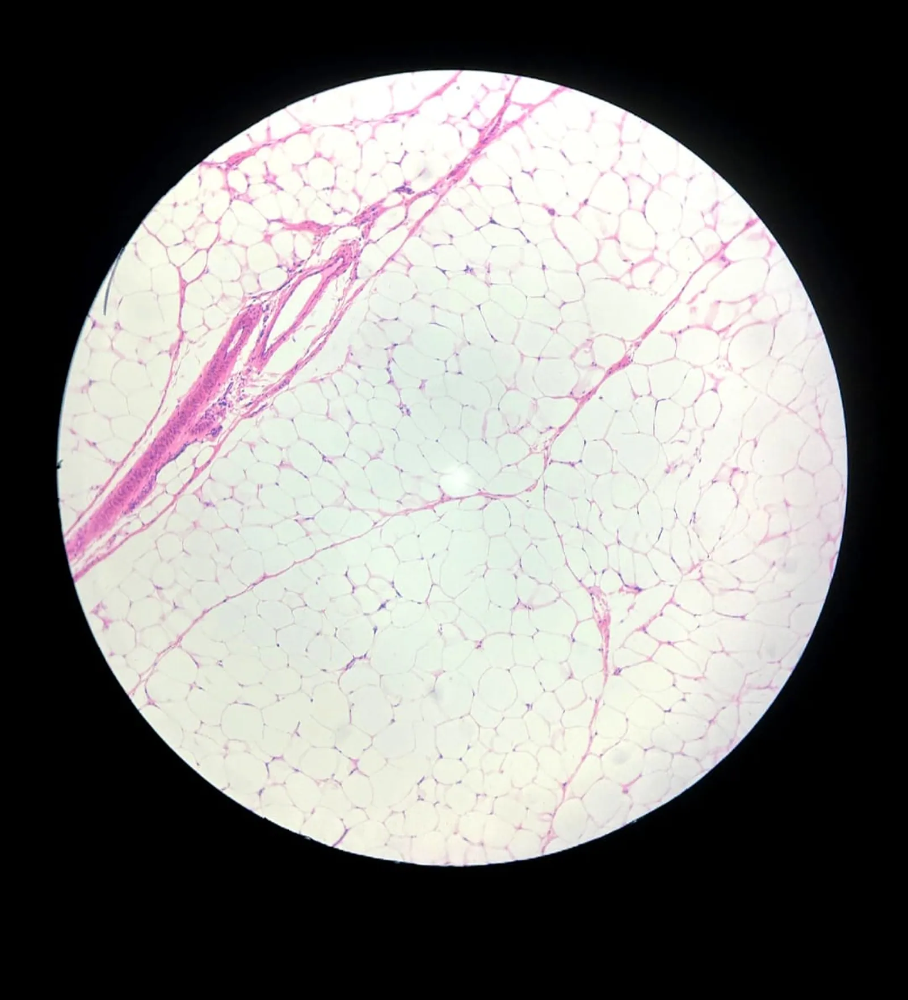
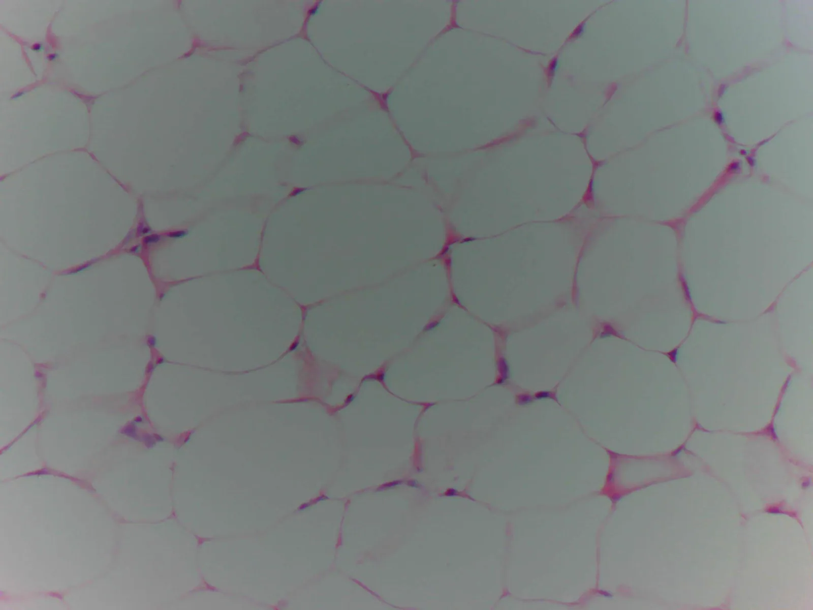
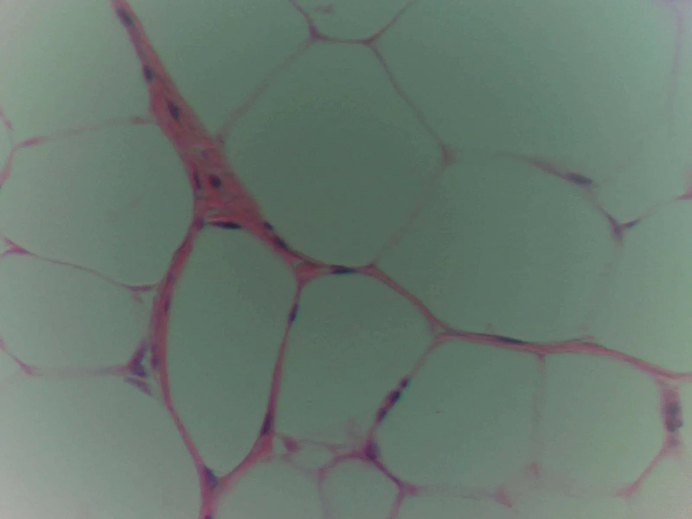

Lâmina 08 · Tecido conjuntivo
Tecido adiposo



Toque na imagem para ampliar. No computador, use as setas do teclado para trocar de imagem.
Lâmina 08 · Tecido conjuntivo



Toque na imagem para ampliar. No computador, use as setas do teclado para trocar de imagem.